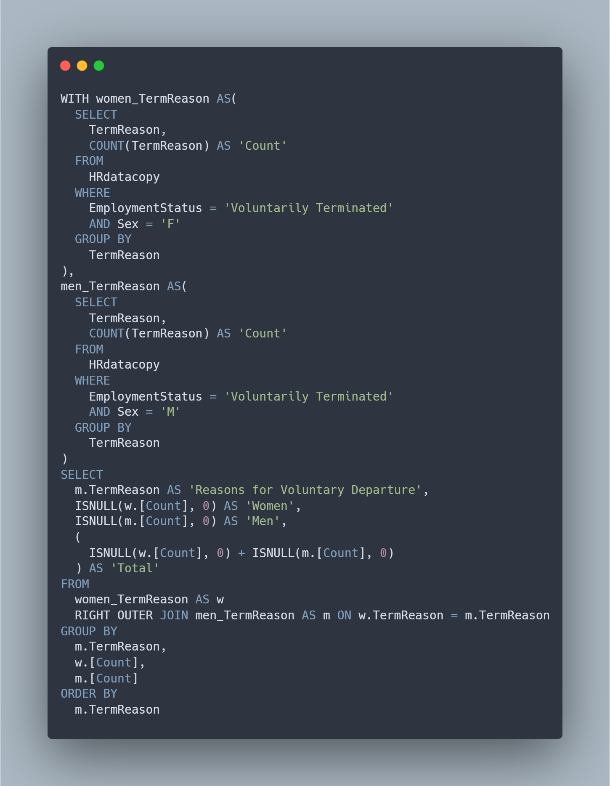

Human Resources
Analysis/Correlation

Overview
The purpose of this project is to evaluate a company's HR data and make recruitment and retention recommendations where HR can focus their efforts. Next, will be an attempt to identify if a correlation exists between Employee Satisfaction, Performance, and Engagement scores. Specifically, the hypothesis will be that 1) satisfaction is highly correlated with engagement, 2) satisfaction is highly correlated with performance and 3) engagement is highly correlated with performance.General analysis of the dataset was conducted (e.g. Race/Sex/Age/Salary Distributions, Number of employees hired/lost each year, etc.).
Analysis Points
The top 3 recruitment sources identified were Indeed (87), LinkedIn (76) and Google Search (49). Due to the nature that some of the recruitment sources could be consolidated, these final numbers could be higher. Consultation with HR group on the specific nature that each recruitment source differ from one another will be needed in order to provide a more accurate picture.
The only employees sourced from Diversity Job Fair were Black or African Americans (29, Women-15, Men-14). Recommendation for HR Recruitment: Re-evaluate the planning and execution of these events to determine why they do not attract potential hires from other diverse/ethnic groups (particularly those from groups that had low counts across all other recruitment sources (American Indian or Alaska Native and Hispanic).
# of Employees Recruited (by Sex)
# of Employees Recruited (by Race)
The results from the below SQL queries were used to produce the tables above.
Reasons for Employee Resignations
Analysis Points
Note: Data, SQL queries, and results related to the employee tenure and retention analysis points below as well as correlation analysis can be found on the full project PDF here.
Of the employees that voluntarily left the company, the highest numbers departed at the 3-year mark (20, Women-12, Men-8), next at the 1-year mark (18, Women-9, Men-9) and finally the 4- year mark (13, Women-8, Men-5).
Recommendations for Retention: these year-marks could be used in conjunction with the reasons for voluntary departure to get employees to stay before they consider leaving. Ex. Prior to when an employee reaches the 3-year and 4-year marks (perhaps 6 months before), open a dialogue with them on whether they are interested in lateral or promotional opportunities.
Project dataset found here. Codebook/Data Dictionary found here.
Full project PDF found here. Full Human Resources (Analysis/Correlation) project SQL code can be found on my Github here.
The results from the below SQL query were used to produce the chart above.
